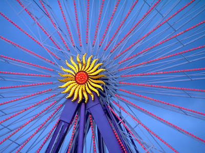

Conferencia leída el 1 de marzo de 2008 en la Facultad de Ciencias de Santander, invitada por la Editorial Alfaguara y por la Sociedad de Profesores de Matemáticas de Cantabria.
En la fría madrugada del 30 de mayo de 1832, un joven entra en un bosque de las afueras de París. Se ha levantado muy temprano a pesar de que la víspera estuvo escribiendo hasta altas horas de la noche, a la luz de un candil, con las piernas envueltas en una manta. Aún no ha cumplido los veintiún años, dos días antes ha sido liberado de la cárcel y mientras trata de orientarse en la neblina afianza su presentimiento de que va a morir. Por eso, se consuela con la idea de que la noche anterior haya dejado escrito un testamento y varias cartas para sus amigos. Una hora más tarde yace en el suelo con una bala en su abdomen. Es recogido varias horas después por un transeúnte, y morirá al día siguiente, de una peritonitis.
Al comienzo de un día laborable cualquiera de 1817, una mujer se despide de su esposo a la puerta de casa, en un acomodado barrio de Londres. Además de un beso, deposita en su mano una nota, que podría parecer la lista de la compra. El hombre guarda el papel en su bolsillo, se sube al coche de caballos y va a trabajar. Cuando acaba su jornada laboral, el marido se dirige a la Biblioteca de la Real Sociedad, institución de la que es socio, como inspector médico de la Real Armada Británica. Allí saca la nota que le ha dado su mujer, busca los libros solicitados y a la luz de una lámpara copia para ella, punto por punto, los artículos científicos que ella necesita para sus estudios. En la Real Sociedad no se admite a las mujeres y el esposo, todas las tardes, va a la biblioteca a copiar los textos que ella necesita para avanzar en sus investigaciones.
A mediodía de una jornada de la que no ha quedado memoria (pero sí el año: –212), la ciudad de Siracusa es un mare mágnum de gritos y de humos. Los soldados del ejército enemigo han franqueado puertas y barricadas y acabado con la resistencia de los últimos defensores, y se dedican a la violación y al pillaje. Sin embargo, en el jardín de su residencia, un anciano parece ajeno a esos dramáticos acontecimientos. Trabaja enfrascado en un complejo asunto y no presta atención a las voces de los asaltantes, que han entrado en su casa. Está tan embebido en sus investigaciones que despacha al militar con un gesto despectivo. Este, ofendido, atraviesa el cuerpo del anciano con su lanza.
A las cinco de la tarde de un 27 de enero de 1860, un hombre tiene la certeza de que no verá la luz del día siguiente. Lo ha notado en los ojos del médico que le ha visitado una hora antes. Se sienta en el sillón frente a la chimenea y comienza a hacer balance. Alumno precoz desde muy niño e ingeniero militar a los 20 años, fue aclamado como el mejor esgrimista y bailarín del imperio austríaco. Además, es un buen violinista y habla nueve lenguas, entre ellas el chino y el tibetano. Ahí quedaban más de veinte mil páginas de sus escritos, de las que solo había conseguido publicar veinticuatro, y eso en un apéndice a una obra de su padre. Mirada de cierta manera, su existencia había resultado un verdadero desperdicio, y la injusticia y el olvido se habían cebado en él.
Es casi seguro que al escuchar estas cuatro historias habrán reconocido a sus protagonistas: Évariste Galois, Mary Somerville, Arquímedes y Janos Bolyai. Los cuatro tienen en común no solo haberse dedicado a las matemáticas, sino haberlo hecho con pasión. Esta conferencia podría haber comenzado no por estas cuatro personas apasionadas, sino también por otros tantos problemas apasionantes en ciertos momentos históricos: el cálculo del volumen de una esfera, la determinación de la cifra 35 de pi, la resolución de la conjetura de Poincaré o la formulación del teorema de Fermat, entre otros muchos.
Hace unos días, mientras preparaba esta charla, hablaba de ella con una persona adulta, una valorada profesional que había hecho su bachillerato de ciencias, y que reconocía no saber qué era el número pi. Decía que en su momento lo había utilizado para aprobar exámenes, pero que ni entonces ni hoy, treinta años después, tenía una idea de qué expresaba. Pi era un misterio para ella. Hoy, cuando se habla de competencias, y en particular de la competencia matemática, diríamos que esta persona es competente para resolver problemas relacionados con el cálculo de longitudes de circunferencias, superficies de círculos e incluso volúmenes de esferas, y como profesores le daríamos el aprobado en el curso correspondiente. Sin embargo, es casi seguro que todos los que estamos aquí convengamos que su educación matemática es más bien pobre.
Me temo que este no es un caso anecdótico. Podríamos pensar en una encuesta imaginaria. Salir a la calle y formular cinco preguntas:
¿Qué expresa el número pi?
¿Por qué al multiplicar una cantidad entera por 10 añadimos un cero a la derecha?
Diga alguna aplicación práctica de la raíz cuadrada, aunque nunca la haya utilizado en su vida cotidiana.
¿Por qué el área de un triángulo se calcula dividiendo por dos el producto de la base por la altura?
Cite el nombre de cuatro matemáticos, incluyendo el de una mujer matemática.
Hoy en día podemos presumir de que los niveles de alfabetización de nuestro país son altos. Hay muchos más titulados universitarios que nunca en la historia, y todos ellos, sin excepción, han cursado al menos diez años de una asignatura llamada «matemáticas». Y, sin embargo, dudo que la mitad de la población encuestada pueda responder correctamente a tres de las cinco preguntas planteadas. Obsérvese que, a excepción de la última, todas ellas son de matemáticas de primaria. La quinta debería ser de cultura general.
En mis charlas literarias suelo decir que la literatura es una forma privilegiada de ver el mundo. Un buen libro nos proporciona una mirada profunda sobre los personajes y los procesos que gobiernan el alma humana. Nos permite colocarnos en la posición del otro y, vicariamente, aprender sobre la vida a través de otros. Es cierto que un buen lector no lee un libro para aprender nada, pero suele ocurrir con los buenos libros que dejan una huella persistente. Se dice que la buena literatura no deja indemne al lector.
En mis clases de matemáticas también insistía en lo evidente: que las matemáticas son otra forma de ver el mundo. Es evidente que el uso de las herramientas que a lo largo de la historia han proporcionado las matemáticas nos han permitido vender ovejas, construir pirámides y rascacielos, conocer la estructura del átomo o viajar a otros planetas. Pero a veces se olvida que las matemáticas son además un producto cultural. Que, al igual que otros logros, han sido conseguidos por hombres y mujeres que han dedicado años a su estudio; que su desarrollo ha atravesado por vaivenes políticos y filosóficos; que entre los matemáticos ha habido rencillas, secretos, envidias, devociones, pasiones… Valdría la pena estudiar matemática aunque las matemáticas no tuvieran ninguna utilidad práctica, de la misma manera que no tiene utilidad extasiarse ante una pintura, una sonata o una escultura.

Quizá haya que pensar que la utilidad intrínseca de la matemática es también una soga que se ata a su cuello. En la escuela primaria, apenas los niños han atisbado en qué consiste la adición, se ven sometidos a la tortura de sumar cantidades llevando y sin llevar, como si en eso les fuera la vida, y muchos de ellos acaban la etapa utilizando las operaciones básicas, pero desconociendo cuáles son los fundamentos de un sistema de numeración posicional, y mucho menos los esfuerzos culturales para dotarse de tal sistema de numeración. Y otro tanto se puede decir de la educación secundaria; se pretende que los alumnos dominen las operaciones con enteros para poder utilizarlas con los racionales, lo que a su vez abrirá la puerta al manejo de los complejos, y de las sucesiones, los límites, las derivadas y las integrales.
Una de las ventajas de la literatura es que no sirve para nada. Quizá por eso, una persona pueda decidir perder la tarde de un sábado ante un buen libro. A pesar de que los índices de lectura no sean muy altos, hay miles de personas que pierden horas leyendo historias imaginadas por otros, por puro placer. En comparación, el número de personas que decide perder la tarde de un sábado disfrutando con las matemáticas es más bien bajo.
Sin embargo, la intrahistoria de las matemáticas es tan apasionante como la mejor de las novelas. La vida y desgraciada muerte de Galois no tiene nada que envidiar a la de personajes creados por Goethe, Tólstoi o, en nuestros días, Coetzee. Las dificultades y el tesón de Mary Somerville, que fue conocida en el siglo XIX como la reina de las ciencias, podrían ser reconstruidas por las hermanas Brontë o por Simone de Beauvoir. Una novela sobre Arquímedes y el sitio de Siracusa podría elevarse al rango de las mejores históricas. Personajes de este calibre los hay a cientos, desde el escriba Ahmés al ruso Perelman, pasando por Gauss, Abel, Omar Khayyam, Tartaglia, Ramanuján, Euler o Gödel.
A pesar de todos los esfuerzos por mejorar la didáctica de las matemáticas, esta asignatura sigue conservando en escuelas e institutos el dudoso prestigio de ser una materia difícil, árida e inaccesible para la mayor parte de los alumnos. Hay algo paradójico en ello, porque el mundo en que viven niños y jóvenes está fuertemente matematizado y, sin embargo, raramente se consigue que los alumnos sean conscientes de que las matemáticas están presentes en la vida cotidiana.
En sus Cartas a una joven matemática, Ian Stewart propone un experimento mental, que consiste en colocar una pegatina roja en todos los objetos en los que encontramos matemáticas en su interior. Un niño recién levantado de la cama debería ir colocándolas en su despertador, en la mesa en que se sienta a desayunar, en las tazas y platos en que se sirve el desayuno, en sus deportivas, en la puerta de salida a la calle, en el ascensor, en las tapas de alcantarillas, en los edificios, los semáforos… Sin embargo, como dice Stewart, todas estas manifestaciones matemáticas permanecen ocultas. Lo único que un niño percibe de matemáticas en el mundo está precisamente en las clases de matemáticas.
Volviendo a la literatura, recuerdo que en mis tiempos de estudiante saber literatura consistía en conocer y recordar nombres, obras, fechas y argumentos. Lo que yo disfrutaba de la literatura tenía que ver con lo que leía fuera del colegio, e incluso en ocasiones a escondidas. Verne, Dumas o Salgari eran subproductos. La isla del tesoro, un simple libro para niños. Los cuentos de terror de Poe, mero entretenimiento. La enseñanza de la literatura se convertía así en el estudio de los productos literarios que entraban dentro de un estrecho canon.
Por suerte, el panorama de la enseñanza de la literatura ha cambiado apreciablemente. Hoy, leer obras literarias forma parte del currículo de la asignatura. Además, los estudiantes tienen oportunidad de encontrar obras que pueden leer por sí mismos, porque existe una copiosa literatura para niños y jóvenes. Este camino no está exento de prejuicios y costumbres adquiridas. En colegios e institutos, cuando realizo encuentros con lectores, suelo temblar cuando los profesores me hablan de que los chicos ya han leído mis libros y se han examinado de ellos. Suelo decir que no quiero que mis lectores se examinen de mis libros o mis personajes. Deseo que los lean con placer, que los analicen, que los critiquen y despiecen, que cambien del libro lo que no les guste, que imaginen historias o finales distintos…
Hablo de todo esto a un grupo de profesores y profesoras de matemáticas porque creo que hay factores comunes entre la educación literaria y la educación matemática. La literatura nos proporciona una manera de ver el mundo y la matemática, también. Que un joven sepa que Kafka escribió La metamorfosis está bien, pero eso añade poco a su concepción del mundo y del alma humana. Que los chicos puedan calcular que 32×45 da como resultado 1440, o que e es el límite de una sucesión también está bien, pero saber multiplicar o conocer el valor de e tampoco contribuye en sí mismo a entender el papel de la matemática en el mundo.
En su delicioso pero ácido libro El hombre anumérico, el profesor John Allen Paulos reflexiona sobre las consecuencias del anumerismo en la sociedad de nuestros días y los déficits en la formación tanto de los alumnos como, en ocasiones, de sus profesores. No ha habido resonancia social. La escuela es lo que es, y su empecinamiento en enseñar productos, y no procesos, nos lleva a los sonrojantes resultados de la imaginaria encuesta que yo proponía al comienzo de esta disertación.
Me atrevo a pensar en un mundo de ficción, que podemos situar dentro de cien años, en el que niños y niñas nacerán con un implante cerebral mediante el que podrán realizar cualquier cálculo aritmético con absoluta precisión y una rapidez eléctrica. Con este aditamento biónico los profesores de matemáticas de primaria podrán dedicar tiempo a observar números en el entorno, a analizar series numéricas, a estudiar regularidades, a analizar simetrías y alternancias, a proponer y resolver acertijos, a estimar probabilidades, a reflexionar acerca de por qué las tapas de las alcantarillas no son por ejemplo octogonales, a evaluar cuáles son los procedimientos más rápidos para conocer cuántos granos de arroz hay en un kilo de arroz…
Yo, que vivo en la época de internet, de ordenadores y de pizarras electrónicas, no entiendo por qué a los niños de cinco o seis años no se les regala al comienzo de su escolaridad una calculadora que apenas vale dos euros, y se dedican las clases de matemáticas no a realizar penosos cálculos, sino a hacer matemática de verdad.
Decía Galileo que las matemáticas son el lenguaje con el que está escrito el Universo y, sin embargo, pocos de nuestros alumnos son capaces de entender estos signos cuando se levantan, caminan hacia su instituto o disfrutan de los efectos especiales en un juego de ordenador o en una película. Quizá un inicio del camino sea, paradójicamente, reivindicar para la matemática su papel como disciplina humanística, y tratar de enseñar las matemáticas también como un producto cultural.
Citando a Weierstrass, «un matemático que no es en algún sentido un poeta nunca será un matemático completo». Pero todos sabemos que la poesía, como la literatura, no sirven para nada. Si acaso, la poesía y la literatura estimulan nuestra capacidad de observación, de reflexión, de asombro, de emoción y de aprendizaje a través de las experiencias de otros. Estoy convencido de que ningún alumno sentirá jamás aprecio por las matemáticas si no ha tenido la oportunidad de disfrutar, incluso de extasiarse, ante algún hecho matemático. Estos hechos asombrosos están por doquier: en la observación del nido de una golondrina, en la tozudez de los múltiplos de 25 frente a la aparente impredecibilidad de los de 47, en el carácter trascendente de pi, en detalles de la biografía de Galois, en el baricentro de un triángulo, en los intervalos que hay entre los números primos, en la numeración griega, en un quipu maya, en algún juego matemático…
Como habrán podido adivinar incluso antes de entrar en esta sala, como escritor voy a invitar a que niños y jóvenes lean sobre matemáticas. Y a que los profesores os animéis a buscar y a recomendar textos, narraciones e historias que les pongan en contacto con los números y sus posibilidades, con la historia de las matemáticas, con la biografía de personajes que las amaron o acabaron odiándolas, con relatos en los que se narren los aspectos más humanos de los descubrimientos matemáticos, la desgraciada existencia de algunos investigadores y la apasionada vida de otros, el heroísmo de algunas mujeres matemáticas…
Los últimos veinticinco años de la vida de Newton fueron ominosos. Aunque no deja de ser uno de los mayores genios de la humanidad, su carácter introvertido, sus manías persecutorias, su ira enfermiza y sus deseos de venganza convirtieron en infame la disputa con su colega Leibniz sobre la paternidad del cálculo infinitesimal. Lo que se inició como una controversia en 1786 se convirtió en una verdadera guerra científica, que tuvo como consecuencia el aislamiento matemático de Inglaterra durante buena parte del siglo XIX. En esta cruel batalla, Leibniz murió abatido y empobrecido, pero sus métodos y su notación fueron los elegidos por todos los matemáticos occidentales.
Parece bastante difícil explicar los principios del cálculo infinitesimal a quienes no sienten mucho aprecio por las matemáticas. Pero quiero acabar con las palabras de Newton, que son pura literatura. Literatura matemática:
«…límites a los que tienden a acercarse cantidades continuamente decrecientes, límites a los que no pueden acercarse más que una diferencia dada, pero nunca traspasarlo, ni alcanzarlo antes de que las cantidades disminuyan in infinitum.»
Ricardo Gómez, marzo de 2008